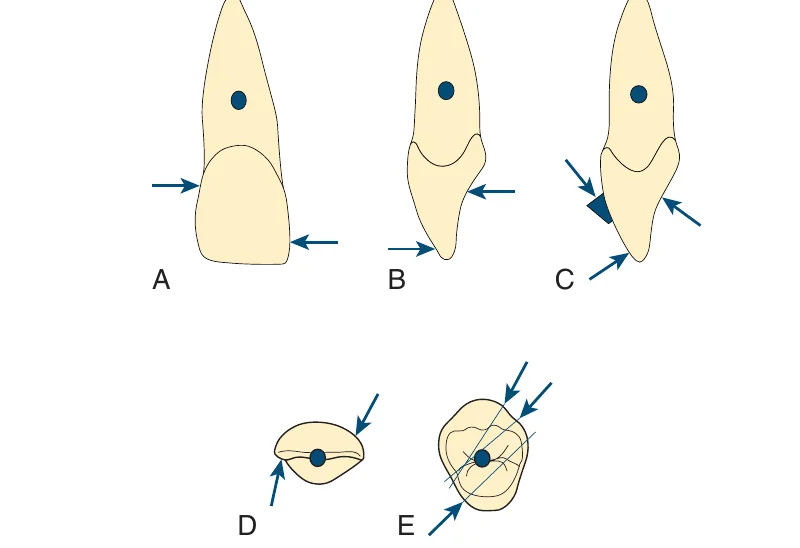

نسخه استخراجشده؛ ترجمه یا تأیید علمی انجام نشده است. وضعیت: captured
الاینر یک پوستهی پلاستیکی است که کمی با موقعیت فعلی دندانها تفاوت دارد. وقتی جا میافتد، تغییر شکل میدهد و همان تمایل به بازگشت، نیروی ارتودنتیک را میسازد.
تفاوت بنیادی با براکت اینجاست: نیرو پیوسته نیست، متناوب است — تنها زمانی که الاینر در دهان باشد اعمال میشود. به همین دلیل ۲۰ تا ۲۲ ساعت استفاده در روز یک توصیه نیست، شرط کارکرد است.
و تفاوت دوم: نیرو از سطح تاج اعمال میشود، نه از یک نقطهی مشخص روی آن. این یعنی کنترل جهت نیرو ذاتاً دشوارتر است.
پوستهی صاف روی تاج صاف میلغزد. برای اینکه الاینر بتواند نیروی هدفمند بسازد، به گیره نیاز دارد.
اتچمنتهای کامپوزیتی برجستگیهای کوچکی هستند که با شابلون روی دندان چسبانده میشوند. هرکدام برای یک کار طراحی شدهاند: اتچمنت چرخشی برای روتیشن، اتچمنت اکستروژن برای بیرون کشیدن، و اتچمنت نگهدارنده برای بهبود گیر کلی پوسته.
ابزار دوم، پرِسِر یا برجستگی روی خود الاینر است که فشار موضعی میسازد.
قاعدهی ساده: هر حرکتی که به کنترل ریشه یا نیروی نامتقارن نیاز دارد، بدون اتچمنت انجام نمیشود.

نرمافزار یک انیمیشن زیبا نشان میدهد که در آن هر دندان دقیقاً سر جایش مینشیند. این پیشبینی است، نه پیشگویی.
در عمل، بخشی از حرکات برنامهریزیشده کامل اجرا نمیشوند. به این فاصله عدم تطابق میگویند و راهحلش هم از پیش تعریف شده است: ریفاینمنت — اسکن تازه و ساخت مجموعهی جدید.
دو نکتهی عملی: در هر ویزیت، نشستن کامل الاینر روی همهی دندانها را چک کن — فضای خالی در ناحیهی خلفی، نخستین نشانهی عدم تطابق است. و از جلسهی اول به بیمار بگو که ریفاینمنت بخشی از برنامه است، نه نشانهی شکست.